Windows7にOffice2000をインストールする
・友人から電算機を貰った
近頃友人から電算機を貰った。型番はThinkPad x201。OSはWindows7。大学に行ってWindowsの電算機を一台も持っていない状況だったので(LinuxMintで耐えていた)、Windows機が必要だとは思っていたが、新品のWindows11搭載機は無駄に高性能で高価。お金をケチろうとするとまた動作が激重のものを使わないといけなくなるのだが、友人から高いスペックを要求しないWindows7の中古の電算機を無償で貰えることになったのでそれを貰って使うことにした。(無論、Win7はとっくにサポートを終了しているのでセキュリティ的に使用は推奨しない。私は使いやすさを優先した。)
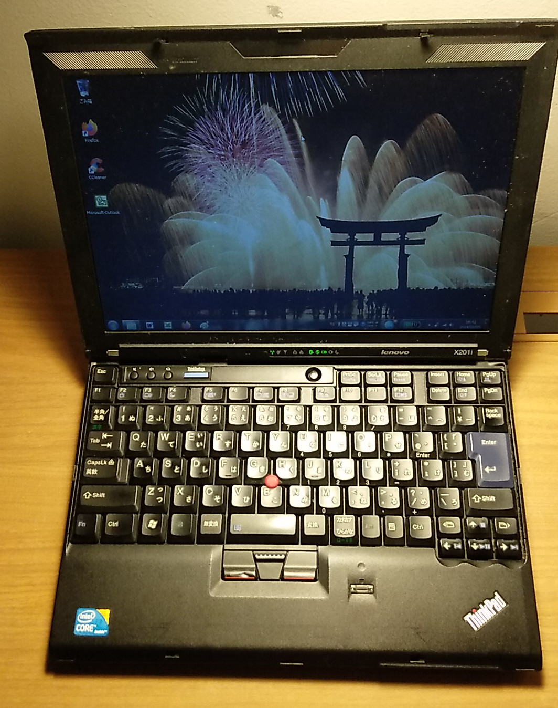
↑ThinkPad x201。写真はOfficeインストール後。
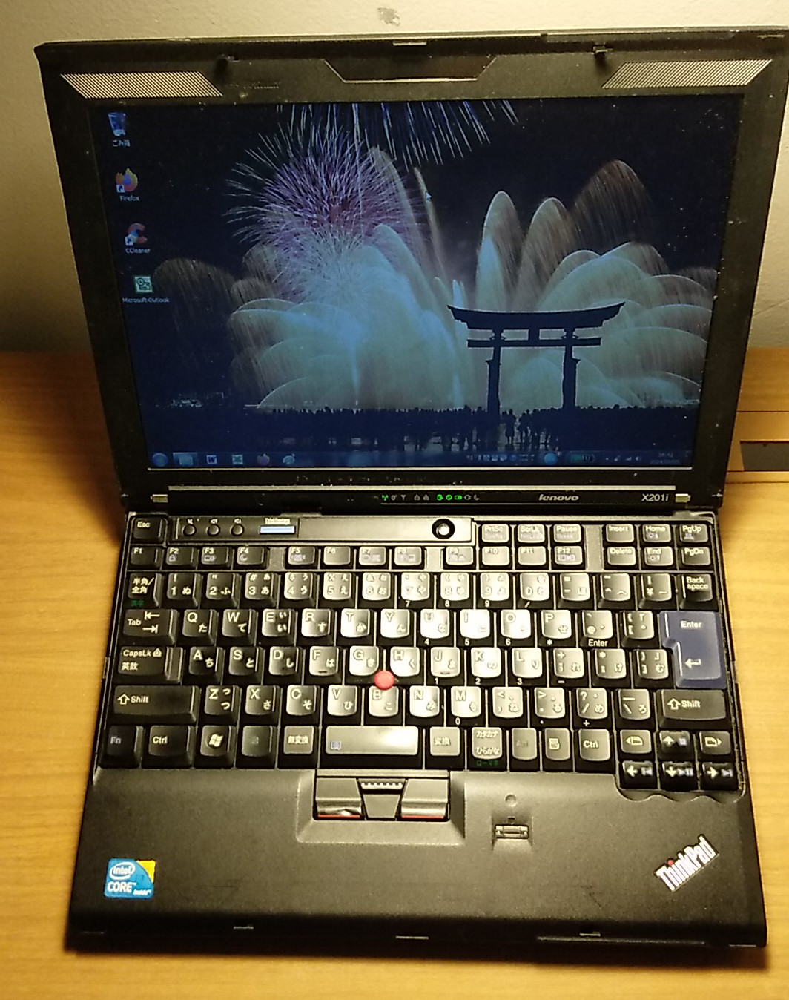
↑ThinkPad x201。写真はOfficeインストール後。
・秋葉原で...
その後、大学に戻る途中に秋葉原に寄り道したが、ラジオデパートでとんでもないものを発見した。
なんと、Office 2000 Personalが200円で売られていたのである。20年前のものとはいえども、MSのWord・Excelが200円で入手できるのは有り難いと思い購入。ThinkPad x201にインストールすることにした。
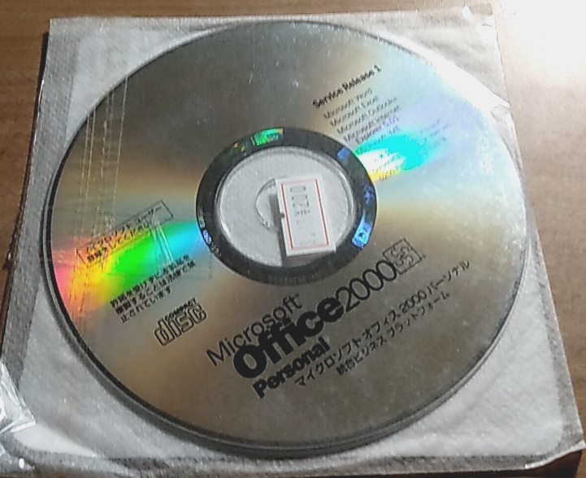
↑まさかの200円。PowerPointがないとしてもかなり安い。
なんと、Office 2000 Personalが200円で売られていたのである。20年前のものとはいえども、MSのWord・Excelが200円で入手できるのは有り難いと思い購入。ThinkPad x201にインストールすることにした。
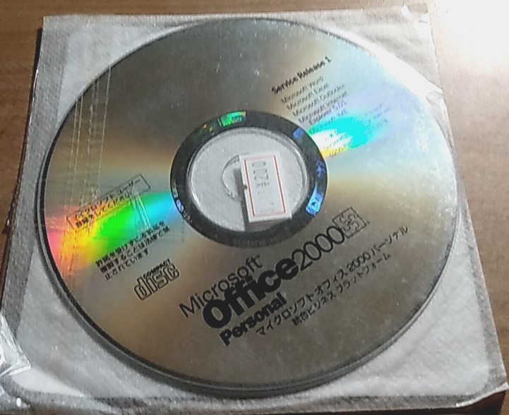
↑まさかの200円。PowerPointがないとしてもかなり安い。
・インストール
外付けのCD/DVDドライブに入れてインストールを実行していく。
CDをいれ、ウィザードに従って進める。
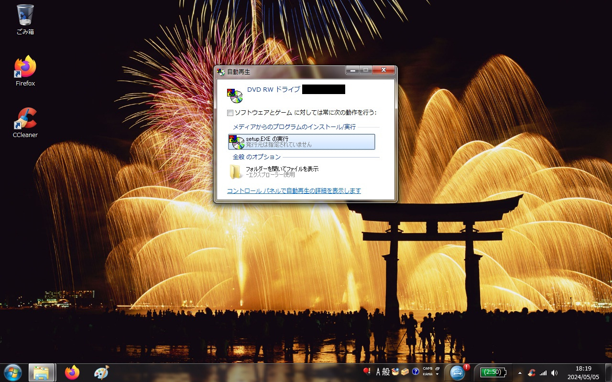 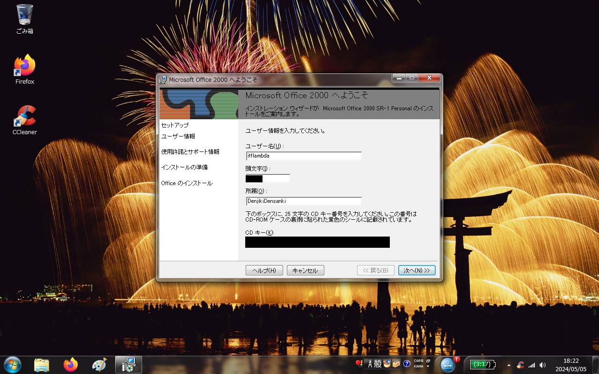
(ここで懐かしのWindows95の起動音が流れる。➚)
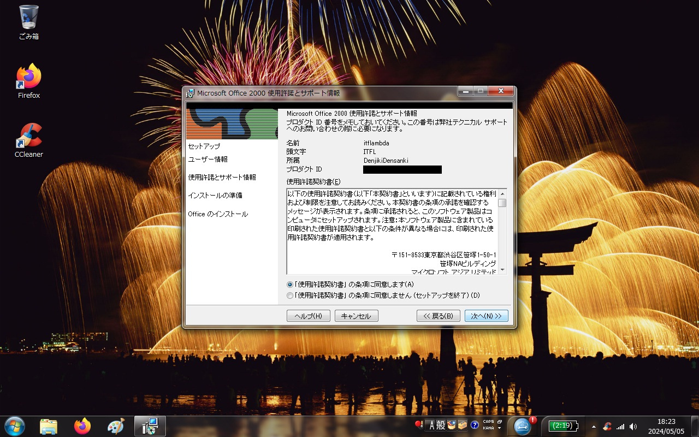 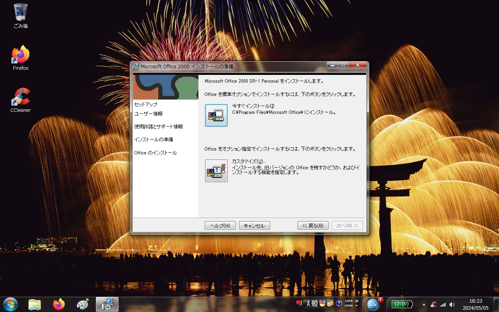
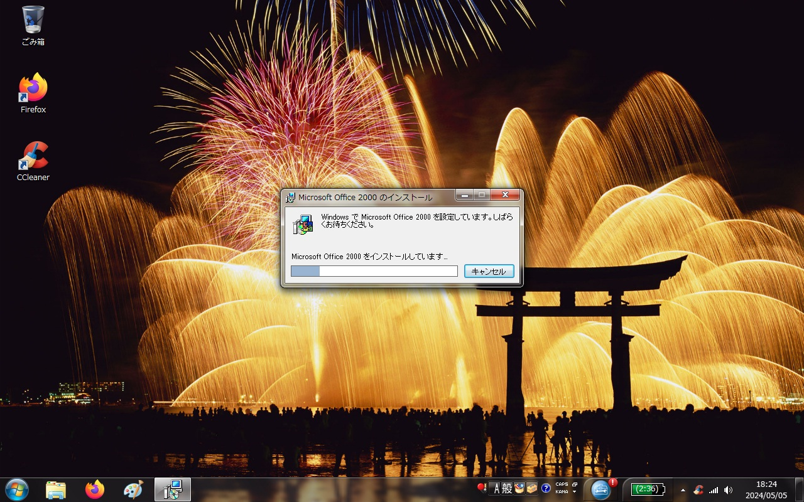 完了したらインストールディスクを取り出す。
(ここで懐かしのWindows95の起動音が流れる。➚)
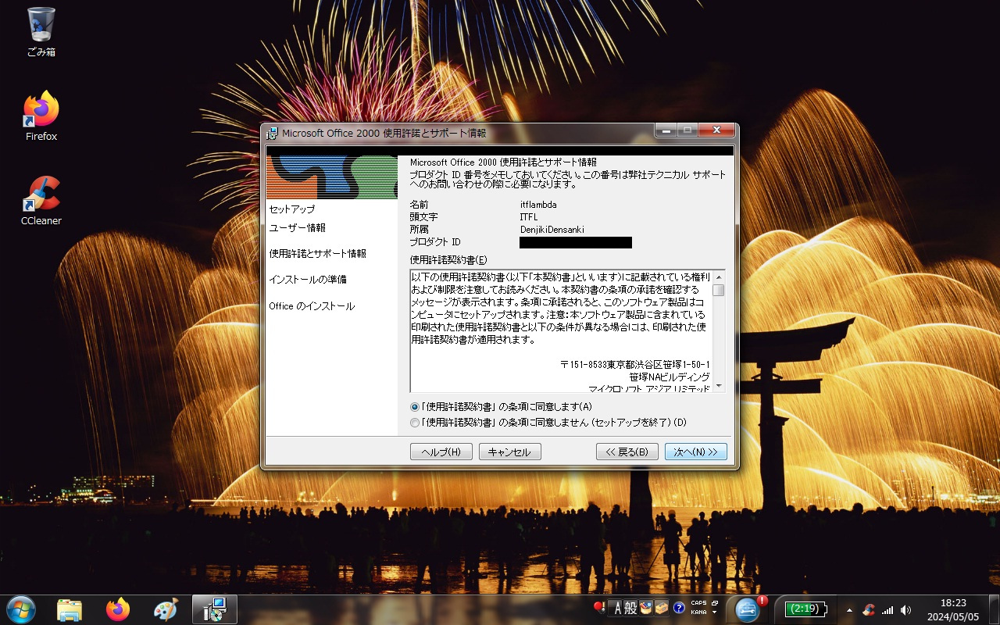 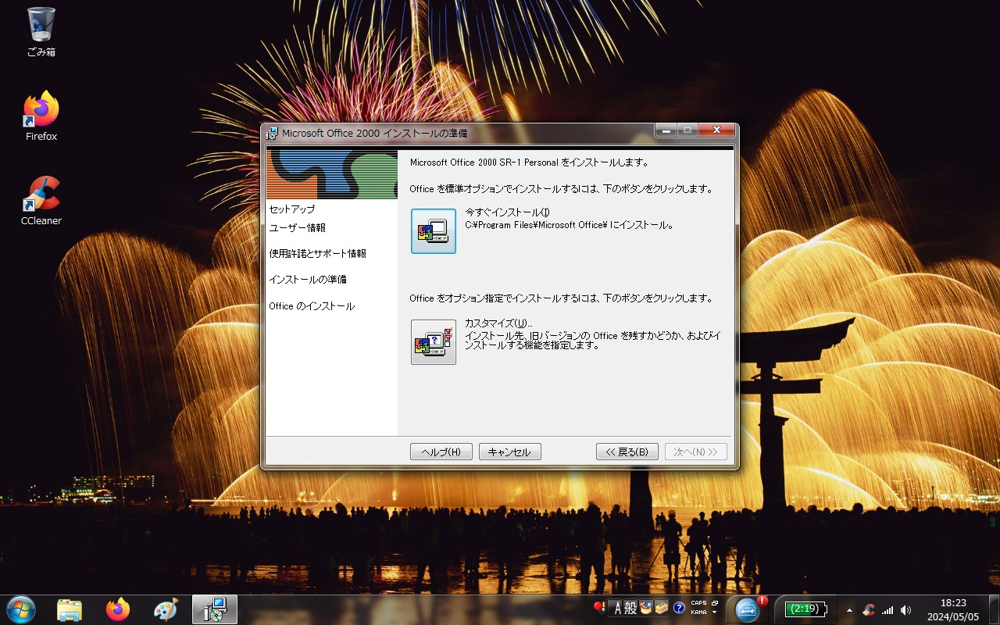
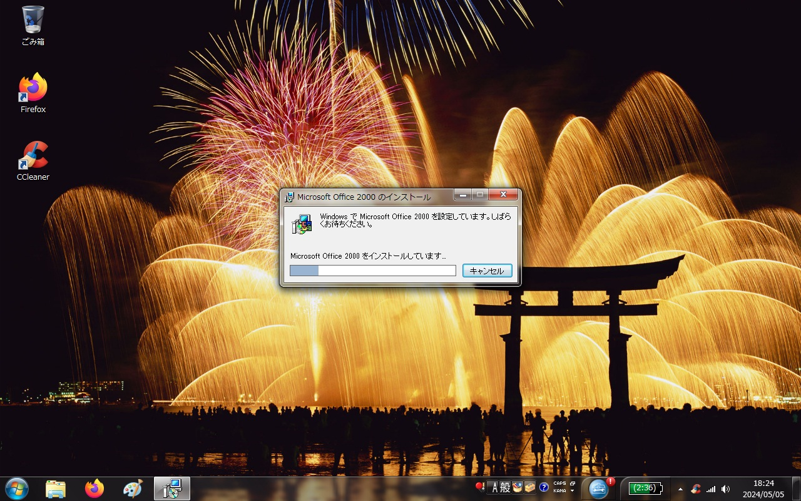 完了したらインストールディスクを取り出す。
・Word2000を使ってみる
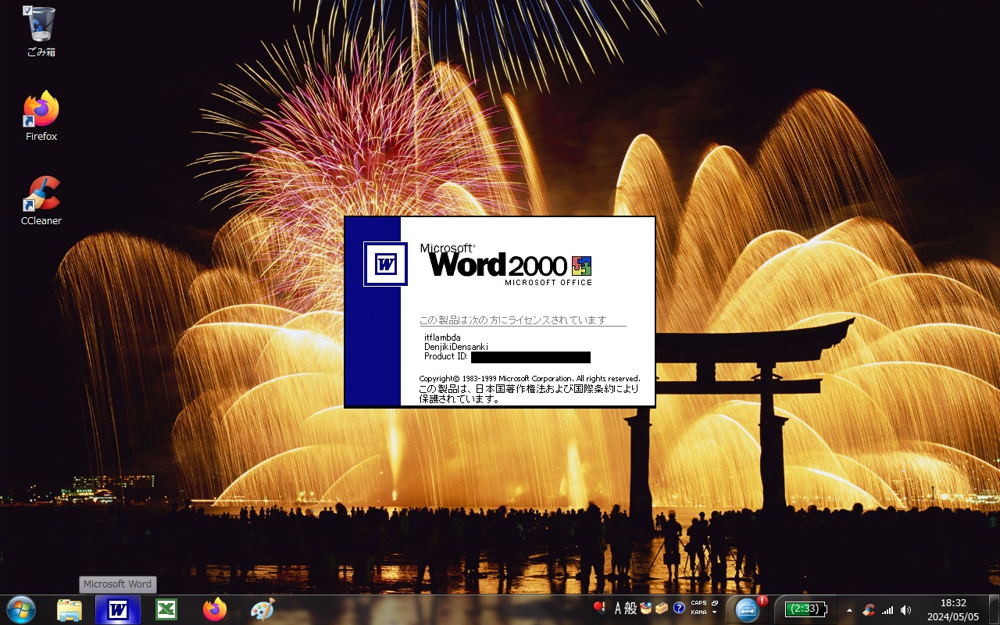 
Wordを起動するとOfficeの日本語版のキャラクターの「カイル君」(右上図の右下端のイルカ)が出迎えてくれる。最近人工知能が発達してWindowsに組み込まれたりしているが、その20年前に既に対話形式のOfficeのアシスタントなるものが存在していたということがわかる。ただ、的確な回答が戻ってこなかったので不評であった模様。キャラクターはカイル君以外にも数種類用意されいて、そのうちの幾つかを紹介しようと思う。
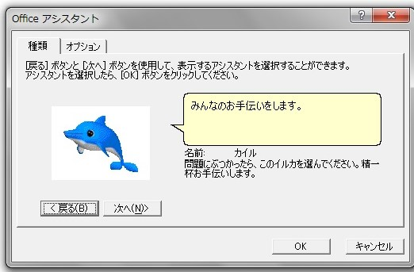
日本語版Officeの既定のキャラクタ、カイル君。「お前を消す方法」という検索で有名らしい。
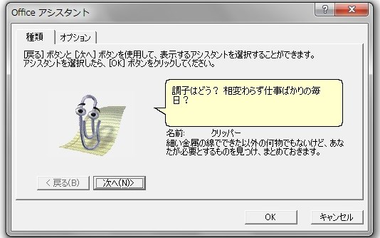
英語版キャラクタ、Clippy。こちらも不評だった模様。
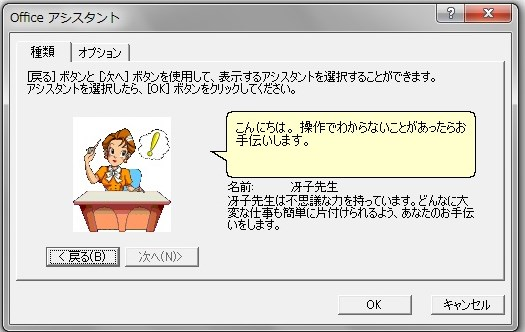
不思議な力を持っていると主張している冴子先生。
これらのキャラクタはいずれもOffice97で登場し、office2003で姿を消したので今のOfficeでは見られない。(冴子先生のみ2010で復活?詳しくは「参考」へ) Windows7ではOSの関係上キャラクターの背景が紫色になってしまう。以前はMSのサイトに修正用のプログラムが公開されていたものの、現在は公開を終了している。(但し、こちらのリンクでダウンロードが可能なのを発見した。)
また、やろうと思えばキャラクターを自作できることも可能な模様。(参考--AAアプリ研究室)
旧式のWordなので、このアシスタント機能を除いて、最新版のようにOnedriveが云々とか自動保存が云々とか不快になる機能が少なく使いやすい。ただ、Wordのファイルがdocx形式ではなくdoc形式で出力されることだけには気をつけたい。(こちらもdocxをdocに変換するためのパッチが存在する。)
Wordを起動するとOfficeの日本語版のキャラクターの「カイル君」(右上図の右下端のイルカ)が出迎えてくれる。最近人工知能が発達してWindowsに組み込まれたりしているが、その20年前に既に対話形式のOfficeのアシスタントなるものが存在していたということがわかる。ただ、的確な回答が戻ってこなかったので不評であった模様。キャラクターはカイル君以外にも数種類用意されいて、そのうちの幾つかを紹介しようと思う。
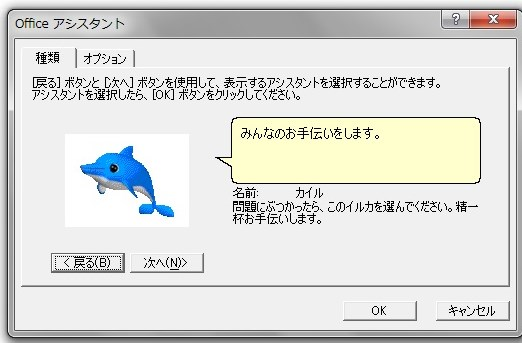
日本語版Officeの既定のキャラクタ、カイル君。「お前を消す方法」という検索で有名らしい。
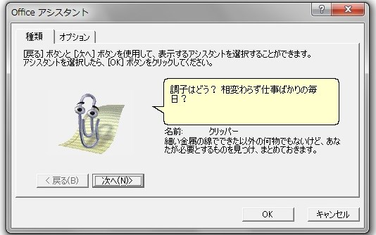
英語版キャラクタ、Clippy。こちらも不評だった模様。
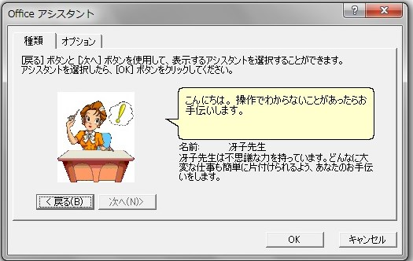
不思議な力を持っていると主張している冴子先生。
これらのキャラクタはいずれもOffice97で登場し、office2003で姿を消したので今のOfficeでは見られない。(冴子先生のみ2010で復活?詳しくは「参考」へ) Windows7ではOSの関係上キャラクターの背景が紫色になってしまう。以前はMSのサイトに修正用のプログラムが公開されていたものの、現在は公開を終了している。(但し、こちらのリンクでダウンロードが可能なのを発見した。)
また、やろうと思えばキャラクターを自作できることも可能な模様。(参考--AAアプリ研究室)
旧式のWordなので、このアシスタント機能を除いて、最新版のようにOnedriveが云々とか自動保存が云々とか不快になる機能が少なく使いやすい。ただ、Wordのファイルがdocx形式ではなくdoc形式で出力されることだけには気をつけたい。(こちらもdocxをdocに変換するためのパッチが存在する。)
・参考
Office 2010で冴子先生“復活”の舞台裏・・・日経XTECH
Microsoft エージェント対応のプログラムが Windows 7 で動作しない・・・Microsoftr
Microsoftエージェント 修正プログラムのダウンロード ・・・Microsoft
Officeアシスタントの作り方・・・AAアプリ研究室
ThinkPadを無償提供した友人、Officeを200円で売っていた店舗、CDドライブを貸してくれた別の友人に感謝。
Microsoft エージェント対応のプログラムが Windows 7 で動作しない・・・Microsoftr
Microsoftエージェント 修正プログラムのダウンロード ・・・Microsoft
Officeアシスタントの作り方・・・AAアプリ研究室
ThinkPadを無償提供した友人、Officeを200円で売っていた店舗、CDドライブを貸してくれた別の友人に感謝。
・おまけ
Officeのインストールを終えてシャットダウンしようと思ったところ、WindowsUpdate98連RTAが始まってしまった...
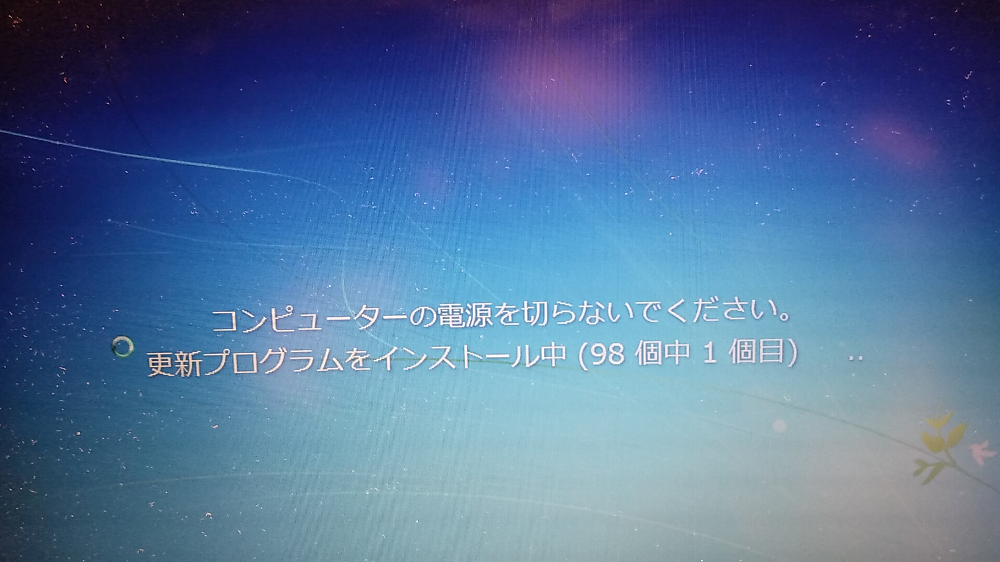
更新が長いことだけは、どのバージョンでも変わらないものか...
更新が長いことだけは、どのバージョンでも変わらないものか...
記事作成日:2024/05/05
最終更新日:2024/09/12
執筆：虚時間fλ
最終更新日:2024/09/12
執筆：虚時間fλ